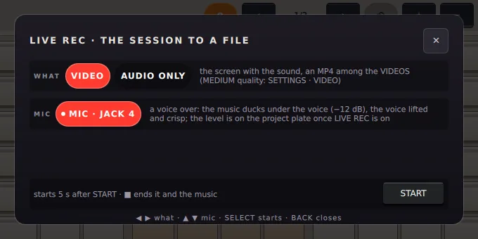
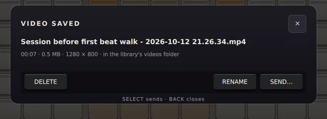

Usar ravving / guide/film-a-session.md
Graba tu sesión en vídeo
LIVE REC: un vídeo de la pantalla o de una cámara con el sonido sincronizado, o solo el sonido, con tu voz encima.
Graba lo que tocas en vídeo: la pantalla, o una cámara USB, con el sonido sincronizado. O graba solo el sonido. En los dos casos, la música sigue sonando.
Empieza LIVE REC
- Pulsa MENU y toca LIVE REC.
- Elige WHAT, qué grabar:
- VIDEO: la pantalla o una cámara USB, con el sonido, como un MP4 entre tus VIDEOS;
- AUDIO ONLY: solo el sonido, como un WAV entre tus TRACKS.
- Elige si entra el MIC. Si está activado, tu voz va encima de la música.
- Toca START.

El diálogo es la confirmación, así que un toque sin querer nunca empieza una grabación.
Mientras graba
La placa cuenta hacia atrás, REC IN 3, y luego muestra el tiempo: ● REC 00:04. El menú se cierra antes, para no salir en la imagen.
En un vídeo, cada tecla que pulsas aparece nombrada abajo en la pantalla, para que quien lo vea sepa qué tocaste.
Detenlo
Pulsa STOP. Termina la grabación, y la música con ella.
Después, LIVE REC sigue activado y listo: pulsa RECORD para otra toma, desde cualquier página. Para apagarlo, vuelve a tocar la tarjeta LIVE REC en el menú.
Al terminar
El diálogo VIDEO SAVED muestra el archivo, cuánto dura y su tamaño.

- DELETE: tócalo dos veces en menos de tres segundos.
- RENAME: ponle tu propio nombre.
- SEND…: a una memoria USB, uno de tus ordenadores o tu teléfono.
Una grabación de audio también tiene METADATA…: etiquétala, dibuja su portada y guárdala como WAV, FLAC, OGG o MP3, como un tema exportado.
Habla sobre la música
Con el MIC, la música baja mientras hablas y vuelve cuando paras. Si aparece MIC TOO HOT, baja el GAIN del RECORDER.
Ajustes
MENU → SETTINGS → VIDEO tiene la QUALITY, el TIMER antes de empezar a grabar, la SOURCE (la pantalla o una cámara USB) y la mezcla de voz en off.
Más
- Grabaciones de vídeo y la conexión con el ordenador: todos los ajustes, hablar sobre la música y tus ordenadores.